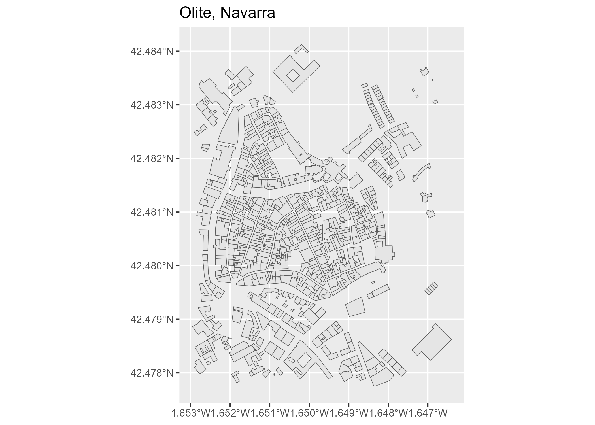

CatastRoNav is a package that provide access to different API services of the Cadastre of Navarre. With CatastRoNav it is possible to download spatial objects as buildings or cadastral parcels.
Installation
You can install the developing version of CatastRoNav using the r-universe:
# Install CatastRoNav in R:
install.packages("CatastRoNav",
repos = c(
"https://ropenspain.r-universe.dev",
"https://cloud.r-project.org"
)
)Alternatively, you can install the developing version of CatastRoNav with:
Usage
The WFS service allows to download vector objects of specific cadastral elements. The result is provided as objects (See sf package).
library(CatastRoNav)
library(ggplot2)
wfs_get_buildings <- catrnav_wfs_get_buildings_bbox(
c(-1.652563, 42.478016, -1.646919, 42.483333),
srs = 4326
)
# Map
ggplot(wfs_get_buildings) +
geom_sf() +
ggtitle("Olite, Navarra")
Citation
Hernangómez D (2023). CatastRoNav: Interface to the API Catastro de Navarra. doi:10.5281/zenodo.6366407, https://ropenspain.github.io/CatastRoNav/.
A BibTeX entry for LaTeX users is:
@Manual{R-catastronav,
title = {{CatastRoNav}: Interface to the {API} {Catastro} de {Navarra}},
author = {Diego Hernangómez},
year = {2023},
version = {0.0.2.9000},
doi = {10.5281/zenodo.6366407},
url = {https://ropenspain.github.io/CatastRoNav/},
abstract = {Access public spatial data available under the INSPIRE directive. Tools for downloading references, buildings and addresses of properties on Navarre (Spain).},
}See also
The package CatastRo provides similar functionalities for Spain excluding the Basque Country and Navarre.
Terms and conditions of use
Data provided by the Government of Navarre under Creative Commons Attribution (CC BY 4.0). The service is provided “as is”, and without guarantee of any kind, implicit or explicit.
Data source: SITNA – Government of Navarre